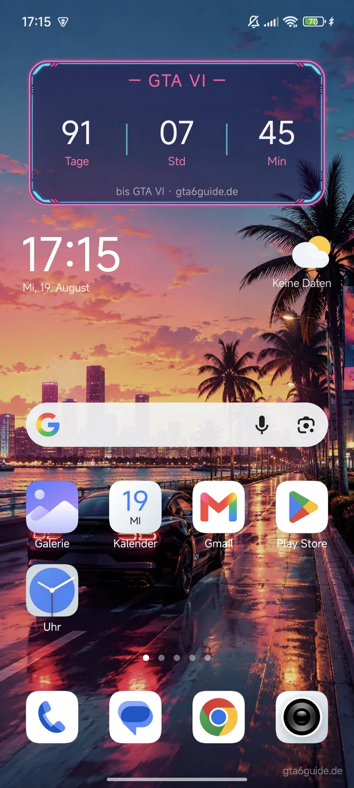

Der Countdown, der dich überall findet
Sperrbildschirm entsperren, Countdown sehen, kurz durchatmen – unsere kostenlose Android-App bringt den GTA-VI-Countdown als Widget auf Sperr- und Homescreen, dazu Vice-City-Wallpapers im Neon-Look. Direkt von uns, ohne Umwege.
Nur für Android · kostenlos · kein Play-Store-Konto nötig
So sieht's aus


Was drinsteckt
Sperrbildschirm & Homescreen
Das Countdown-Widget läuft auf beiden – Tage, Stunden und Minuten bis zum 19. November, immer im Blick.
Mehrere Styles
Eine kleine, feine Auswahl verschiedener Widgets und Wallpapers im Vice-City-Neon-Look – such dir deinen Favoriten aus.
Dein Hintergrund, unser Widget
Die Widgets funktionieren auch mit deinen eigenen Hintergründen – Familienfoto plus Neon-Countdown? Läuft.
Kostenlos & direkt von uns
Die App gibt's exklusiv hier auf gta6guide.de als APK-Download – keine Anmeldung, keine Kosten.
Installation in 2 Minuten
APKs von außerhalb des Play Stores brauchen einmalig eine Freigabe. Wähl aus, was auf dich zutrifft:
- APK herunterladen. Tipp oben auf „APK herunterladen“ – die Datei landet in deinem Download-Ordner.
- Download öffnen. Zieh die Benachrichtigungsleiste herunter und tipp auf die fertige Datei GTA6Wallpapers-v1.1.4.apk (alternativ: App „Dateien“ → Downloads).
- Installation erlauben. Android fragt beim ersten Mal nach der Berechtigung „Unbekannte Apps installieren“. Tipp auf Einstellungen, aktiviere den Schalter für deinen Browser und geh zurück. Das ist eine normale Android-Sicherheitsabfrage für Apps außerhalb des Play Stores.
- Installieren. Tipp auf Installieren. Falls Play Protect einen Hinweis zeigt: Details → Trotzdem installieren – die App stammt direkt von uns.
- Wallpaper setzen. App öffnen, Wallpaper aussuchen, als Sperr- und/oder Homescreen setzen.
- Widget hinzufügen. Halte eine freie Stelle auf dem Homescreen gedrückt → Widgets → „GTA6Guide“ auswählen und platzieren. Auf vielen Geräten (z. B. Xiaomi/Samsung) lässt sich das Widget auch auf dem Sperrbildschirm einbinden – je nach Hersteller unter Einstellungen → Sperrbildschirm → Widgets.
- APK laden (Button oben) und wie gewohnt installieren.
- Wallpaper setzen und das Countdown-Widget über die Widget-Auswahl deines Launchers platzieren.
- Sperrbildschirm: Je nach Hersteller unter Einstellungen → Sperrbildschirm → Widgets aktivieren.
Warum als APK und nicht im Play Store?
Kleine Fan-Projekte rund um geschützte Marken haben es im Play Store schwer – deshalb verteilen wir die App direkt hier. Lade die Datei ausschließlich von gta6guide.de herunter; nur dann ist sie unverändert von uns. Updates kündigen wir per Push und Newsletter an – neue Versionen findest du immer auf dieser Seite.
Kurz & knapp
Gibt's das auch für iPhone?
Aktuell nicht – die App ist Android-only. Wenn sich das ändert, erfährst du es zuerst per Push oder Newsletter.
Was passiert nach dem Release?
Der Countdown hat seinen großen Moment am 19. November – die Wallpapers bleiben natürlich auch danach schick.
Kostet das was?
Nein. Die App ist ein kostenloses Extra von GTA6Guide – genau wie die Seite selbst.